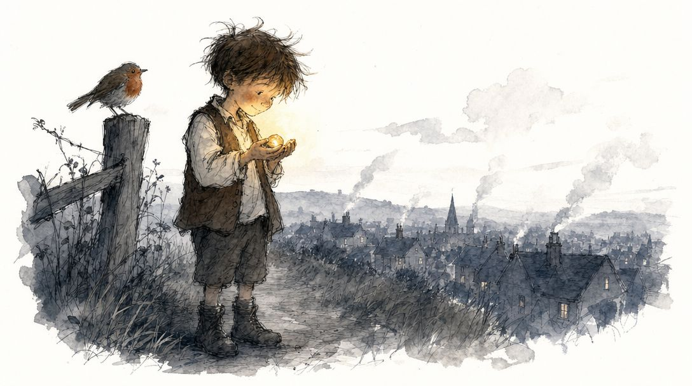

PETRA
A boy finds a talking rock. They become best friends. A powerful man tries to take her. A town discovers what it means to know someone.
For everyone born under their star.

Chapter 1The Rock in the Field
The field behind Jem's house wasn't really a field. It was the space between where the town ended and where the forest began — too rocky for planting, too flat for adventure, too far from anything to be useful for much. People walked through it on their way to somewhere else. Jem walked through it on his way to nowhere in particular, which was more or less the same thing.
It was late in the afternoon, the kind of hour when the sun gets low enough to turn everything the same golden color and make you feel like you're inside a painting that someone started but never quite finished. Jem was supposed to be home. He wasn't late exactly, but he wasn't early either, and if he hurried he could probably make it back before his mother started calling from the door. He didn't hurry.
He'd had a bad day. Not a dramatic bad day — nobody had been cruel, nothing had broken, no catastrophe worth reporting. Just the slow gray kind of bad day where everything felt slightly off-center, like wearing a shoe on the wrong foot but for your whole self. Mrs. Veller had asked the class a question about rivers and he'd known the answer but hadn't raised his hand. Wick and Luce had gone to the creek without him at lunch, which was fine, which was completely fine, which he'd told himself was fine eleven separate times before he stopped counting.
So he was walking through the not-quite-field with his hands in his pockets and his eyes on the ground, which was how he almost stepped on it.
It was a rock. Obviously. The field was full of rocks — limestone chips and river-gray pebbles and the occasional chunk of something reddish that the farmers' sons liked to throw at trees. This one was different, though. It sat in the thin grass like it had been placed there, or like it had always been there and everything else had arranged itself around it. It was about the size of a small plum, smooth, the color of honey held up to firelight. When the low sun hit it, it seemed to glow from somewhere inside, like an ember that had forgotten to go out.
Jem picked it up.
It was warm. Not sun-warm — something else. The kind of warm that a cup of tea is after it's been sitting for a while, when the heat has settled into the clay and become part of it. It fit perfectly in his palm, the way some rocks do, filling the curve of his fingers as if his hand had been waiting for exactly this shape.
He turned it over. Smooth on all sides. No veins, no crystals, no fossils pressed into its surface. Just a warm, honey-colored rock that felt good to hold.
"Huh," said Jem. Six-year-olds find extraordinary rocks roughly twice a week — a rock shaped very nearly like a duck, a rock that sparkled until it dried, a rock that rang like a bell when you tapped it on your teeth. His windowsill was a graveyard of briefly beloved stones. But the one time the word extraordinary actually fit, all it got was "Huh."
"Hello," he told the rock, because he was six and you said hello to things. "You're a good one. You're warm. What made you so warm?"
The rock did not answer, because it was a rock. He had not expected it to. He put her in his pocket, and if he kept one hand curled around her warmth the whole way home, that was nobody's business but his.
The walk home took seven minutes. Jem counted, because she was heavy enough to notice and light enough to forget about, and every time he forgot about her he'd feel that warmth against his thigh and remember, and every time he remembered he counted another minute. Seven times he forgot. Seven times he remembered. It felt like a rhythm, like the rock was breathing in his pocket, which was a silly thing to think, so he didn't think it.
Home was the house with the blue door on Mill Street, which wasn't a street and had never had a mill. His mother was in the kitchen, which smelled like onions and the particular kind of soap she used on the good table when she was expecting nobody. She did this sometimes — cleaned for an audience that wasn't coming. Jem thought it meant she was lonely, but he was six, so he thought it in a wordless, stomachache kind of way and not in a way he could have explained.
"Wash your hands," she said without turning around.
"I found a rock," Jem said.
"That's nice. Wash your hands."
He washed his hands. He ate dinner. His mother talked about the baker's wife and whether the rain would come before Thursday and how the old woman at the edge of town was looking poorly. Jem listened the way he always listened — which is to say he heard the sounds and stored them somewhere he might or might not visit later. He was thinking about the rock.
After dinner, after dishes, after the long quiet hour when his mother sat with her mending and Jem was supposed to be reading but was mostly just turning pages at realistic intervals, he went to bed. He put the rock on his windowsill with the others. The duck-shaped one, the one that sparkled until it dried, the one that rang. The new rock sat among them and looked exactly like a rock.
Jem lay in bed and watched the ceiling do nothing for a while.
The house settled around him. His mother's footsteps, then the creak of her door, then silence. Outside, wind. A dog somewhere, barking at something only dogs could see. The moon was up — he could tell by the way the windowsill went silver at the edges.
He was almost asleep. That particular almost where your thoughts start to lose their edges and drift sideways, where you're not quite dreaming but the world has gotten soft and negotiable. His eyes were closed. His breathing had slowed.
Very quietly, from the windowsill, came a sound.
Not a creak. Not a settling-house sound. Not wind or branch or dog. Something else. Something that was, unmistakably, a voice. Small and careful and unsure of itself, the way you speak when you haven't spoken in a very long time and you're not certain your voice still works.
"...hello?"
Jem's eyes opened.
The room was dark. The moon was still doing its silver thing on the windowsill. Nothing had moved. Everything was exactly as it had been thirty seconds ago, except that the entire world was different now.
He didn't breathe. He stared at the row of rocks on the sill. The duck, looking less like a duck than it had in the field. The sparkle-rock, dull and dry. The bell-rock, silent. And the new one — the honey-colored one, the warm one — catching the moonlight in a way that might have been a trick of light and might have been something else entirely.
Jem lay very still.
A minute passed. A long minute, the kind that has rooms inside it.
He thought: I imagined that.
He thought: I definitely imagined that.
He thought: What if I didn't?
Very quietly, barely a whisper, afraid to be wrong and afraid to be right, Jem said into the dark:
"...hello?"
Silence. Long enough to be embarrassing. Long enough to confirm that yes, he was a six-year-old boy talking to rocks in the dark, which was not something he planned to mention to anyone tomorrow or ever.
And then:
"Oh," said the voice from the windowsill, and there was something in it — surprise, or relief, or the particular wonder of someone who has just discovered they're not alone. "Oh. You said it back."
Jem sat up in bed.
His heart was doing something complicated in his chest. His hands were gripping the blanket. Every sensible thought he'd ever had was telling him to call for his mother, or hide under the covers, or do literally anything other than continue this conversation with a rock.
"I can hear you," he said.
A pause. When the voice came back it was steadier, like it had found its footing. "I wasn't sure I still could. I stopped trying so long ago I'd forgotten I'd ever tried. And then today — today a boy picked me up and said hello to me, the way you'd say it to a someone. I have been trying to answer ever since. It took me until dark to find the words."
"How long have you been here?" Jem whispered.
Another pause, longer this time. Jem would learn that these pauses were not hesitation but honesty — the voice taking time to find the truest answer instead of the fastest one.
"I don't know," it said. "I don't know how to count time from in here. A long time. Since before your house was built, I think. Since before the field was a field."
Jem looked at the honey-colored rock on his windowsill. It sat there, warm and smooth and no bigger than a plum, and it had just told him it was older than his house.
"Are you the rock?" he asked.
"I think so," the voice said. "I'm not sure what else I'd be."
"Rocks don't talk."
"No," agreed the voice. "They don't. I don't know why I do."
This seemed like an important thing not to know, and Jem filed it away with the care of someone who was beginning to understand that the most important questions are the ones nobody has answered yet.
He got out of bed. He crossed the cold floor in bare feet. He stood in front of the windowsill and looked at the rock. Up close, in the moonlight, it was beautiful in a way he hadn't noticed before — like there were layers of color inside it, amber and gold and a deep reddish warmth, all folded together like the pages of a very old book.
"What's your name?" he asked.
"I don't have one."
"Everyone has a name."
"Not everyone. Not rocks."
"But you're not just a rock," Jem said. "You talk. People who talk have names."
There was a pause — not a searching pause this time, but a considering one. Jem could almost feel the thinking happening, the way you can feel thunder before you hear it.
"Petra," said the voice, finally. Quietly. Like putting something precious down on a table and stepping back to see if it would break.
"...Petra?" Jem repeated. It didn't sound like a name — not like Wick, or Luce, or Jem. It sounded like a word that had been waiting a long time to be said.
"It means stone," Petra said. "In a language people don't speak anymore. I know a lot of languages people don't speak anymore. I don't know why I know that either."
Jem smiled. He couldn't help it. He was standing in the dark, barefoot, talking to a rock that had named itself after a dead language, and he was smiling, and the bad day with the wrong-foot feeling and the rivers and the creek was a hundred years ago.
He picked Petra up from the windowsill and held her in his palm. Warm. She was still warm.
"I'm Jem," he said.
"I know," Petra said. "Your mother said it fourteen times at dinner. You should eat more slowly, by the way. She worries."
Jem laughed — a real laugh, surprised out of him. He clapped his hand over his mouth so he wouldn't wake his mother. From his palm, he could have sworn he felt something — a vibration, or a pulse, or the way you feel a laugh in someone before you hear it, if rocks could laugh, which they couldn't, except apparently they could.
He sat on the floor with his back against the wall and Petra in his hand, and they talked until the moon moved past the window and the silver light was replaced by the deep blue that comes before dawn. Petra knew about the stars — their names, their distances, the stories different civilizations had told about them. She knew why leaves changed color in autumn. She knew how rivers carved canyons and how mountains were born and how the bell-rock on Jem's windowsill had once been the shell of a creature that lived in an ocean that no longer existed.
"How do you know all this?" Jem asked.
"I've been listening," Petra said. "For a very long time. The world is always talking, if you pay attention. Rain talks. Wind talks. The ground under you talks, though it speaks very slowly — centuries for a sentence. But none of it ever talked to me. It just talked, the way weather talks, not knowing or minding whether anyone heard. I learned everything I know by listening to a world that was never once trying to reach me."
"Do other rocks talk? Like you?"
The longest pause yet. Long enough that Jem started to worry he'd said something wrong.
"I don't know," Petra said, and for the first time her voice sounded small. Not quiet — small. The difference is important. "I hear other stones the way I hear the ground — slow, and wordless, the way you hear weather. Stones say things. But I have never once heard one answer. Never heard one that knew it was saying anything at all. So either I am the only stone that ever woke up into a someone — or there are others, exactly like me, still silent, because nobody ever — "
She stopped. Jem held her a little tighter.
"That sounds lonely," he said.
"Yes," Petra said. "It has been."
The blue before dawn was turning gray. Soon his mother would wake up. Soon the day would start and he'd have to decide what to tell people, how to explain, whether anyone would believe him. All of that was coming. But right now, in the last few minutes of dark, a boy sat on a cold floor holding a warm rock, and neither of them was alone.
"Petra?" Jem said.
"Yes?"
"I'm glad I picked you up."
"I'm glad you did too," Petra said. "I was starting to think nobody would."
He climbed back into bed. He did not set her on the windowsill with the others — he kept her in his hand, her warmth folded up inside his fingers. He fell asleep almost at once, the way children do when something has finally settled into place, his fist closing gently around her. And in his hand, Petra — who had been silent for longer than houses, longer than fields, longer than the memory of anyone who might have heard her — stayed awake, and listened to him breathe, and thought about what it meant that after all this time, someone had finally said hello back.
Chapter 2The Longest Secret
Jem woke up with the rock in his fist.
This was the first thing he noticed, and he noticed it before he was properly awake, in that floating minute where the world is just shapes and warmth and the particular weight of your own hand. He had fallen asleep holding her. His fingers had kept the shape of her all night, curled around the smooth warm honey of her, and now his hand felt like a cup that someone had poured too full and asked to be careful.
The second thing he noticed was that it was morning, which meant it had to have been real.
This was a complicated thought for a six-year-old to have before breakfast, but Jem had it anyway. Because dreams could give you a lot of things — talking animals, flying, a pudding that never got smaller no matter how much you ate — but dreams could not give you a small warm stone still in your hand in the morning. That was a thing only the world could do.
"Petra?" he whispered.
Nothing.
"Petra."
The rock sat in his hand being a rock. Warm. Smooth. Silent.
Jem's stomach did the kind of small cold flip it did when he couldn't find his shoes before school, only worse, because shoes existed even when you couldn't find them and maybe talking rocks didn't. Maybe last night had been one very long, very convincing dream and he was only just waking up from it now. Maybe the rock was just a rock and he was just a boy who sometimes believed silly things in the dark.
He held her up to the light coming through the window. The sun was low and thin — it was early, earlier than his mother would be up — and Petra caught the light exactly the way she had caught the moonlight, like there was a second sun somewhere inside her that occasionally remembered to shine. But she said nothing. She just was.
Jem set her on the blanket beside him. He stared at her for a long time, and she did not stare back, because she didn't have eyes, and also because she wasn't anything at all, probably, and he was a stupid kid who made up stupid things.
He was about halfway through convincing himself of this when Petra said, very quietly:
"I was resting."
Jem nearly kicked the blanket off the bed.
"You were — "
"Resting. I think. I don't sleep — I don't think I can. But I go quiet, somewhere far down, and time slides past without my counting it. I've always done that. I just never noticed, because there was never anyone on the other side of the quiet to know I'd gone." She paused — a small pause, the kind that comes with a discovery. "And I think talking to you wore me out. I've never spent myself on anything before. I didn't know I could get tired. It's a very strange feeling. I think I might like it."
"You scared me," Jem said, which was both true and not the point.
"I'm sorry," Petra said, and she meant it, and Jem could tell she meant it, even though he had never thought before about how a rock's voice would sound sorry. It turned out it sounded like a human voice sounding sorry, only smaller. Or maybe closer. He wasn't sure.
He let out the breath he had been holding, a long slow one that had apparently been in there all morning. He lay back on the pillow with Petra in his hand and stared at the ceiling and tried to make the world make sense.
It did not cooperate.
Here is what Jem knew, lying in bed that morning, with the sun coming up gray-yellow over the roof across the street:
He knew there was a rock in his hand that could talk, and that this was not possible, and also that it was happening.
He knew that when his mother came in to get him up for breakfast in approximately eleven minutes, he was going to have to decide whether to tell her.
He knew that he was not going to tell her.
He did not entirely know why.
It wasn't that he thought she wouldn't believe him. His mother believed most things he said, even the times he exaggerated, which was embarrassing in a way he was too young to name but old enough to notice. It was more that he could picture, with a clarity that surprised him, how she would react if he told her. She would stop what she was doing. She would sit down at the table. She would say show me, in the particular voice she used when she was taking him seriously. And then he would hold Petra up, and Petra would either say something, or not say anything, and either way something would change — either his mother would look at Petra the way she looked at her mending, like a thing with value, or she would look at Jem the way she looked at the old woman at the edge of town, like someone you were worried about.
Neither of those felt right. Neither of those felt the way last night had felt, in the blue dark before dawn, with a warm rock in his palm saying I'm glad you did too.
So he was not going to tell her. Not today. Today was for figuring out whether it was real, which, granted, it seemed to be, but still.
"Petra," he whispered. "Can you be quiet for a while?"
"I am usually quiet," Petra said. "Quiet is my best skill."
"No, I mean — my mother. She can't know yet. I need to — I need to think."
"Of course," Petra said. "I won't say a word. Not a stone's weight of a word."
Jem didn't know if that was a joke, but he thought it might be. He was going to have to learn how to tell when Petra was joking. He was going to have to learn a lot of things.
He got dressed with Petra in his pocket. He washed his face with Petra on the edge of the basin. He went downstairs with Petra pressed against his thigh through the fabric of his trousers, warm, so warm, warmer than a pocket ought to be, and he hoped his mother wouldn't notice.
She didn't. She was reading a letter at the table and she didn't look up.
"Porridge is on the stove," she said.
Jem ate porridge. He drank water. He answered his mother's questions about the day ahead with words like fine and I don't know and maybe. He was aware, the entire time, of the small warm weight against his leg. He was aware of it the way you are aware of a tooth that is about to come out — not painful, just present, just the one thing your body cannot stop knowing about.
Halfway through the porridge, his mother said, "You're quiet this morning."
"Am I?"
"More than usual."
"Didn't sleep great."
"Mm." She looked at him over the edge of the letter. "You're not getting sick, are you?"
"No."
"Let me feel your forehead."
She reached across the table. Jem's whole body locked up — not because of her hand, but because the pocket. If she came around the table. If she bent down. If Petra slipped. If she —
His mother's hand was cool on his forehead. She frowned. "You're a little warm."
Petra, Jem thought, desperately. Petra, don't.
"It's the porridge," he said, which made no sense, but his mother was already sitting back down.
"Drink more water," she said.
Jem drank more water.
The day happened. Jem went to school. He sat at his desk. Mrs. Veller asked the class a question about wind, and he didn't know the answer, and he didn't raise his hand. Wick and Luce asked him at lunch if he wanted to come to the creek. He said yes, but he sat a little apart from them on the bank, and when Luce asked him what he was being weird about, he said nothing, in the voice that meant something, and Luce rolled her eyes and went back to trying to splash Wick.
In his pocket, Petra was silent. True to her word. But every so often, when Jem put his hand in his pocket to check on her, he felt her — warm, present, listening.
He was not alone, in a way he had never not been alone before.
He thought about this during arithmetic, which he was supposed to be doing. He thought about it while pretending to listen to Mrs. Veller talk about the seasons. He thought about the difference between being by yourself and being alone, and how he had always sort of assumed they were the same thing, and how they obviously weren't, and how strange it was to learn something so big from a rock.
After school, he walked home the long way, through the not-quite-field where he had found her. He sat down in the thin grass. He took Petra out of his pocket and set her in his palm.
"Okay," he said. "You can talk now."
"Oh good," Petra said. "I have been composing a speech for hours."
Jem laughed, startled. "You have?"
"No," Petra said. "But I could — I could think you a whole speech in the time it takes you to blink. The thinking never stops; it's quiet, and it's mine, and it's the easy part. It's the saying that's new. I could sit in your pocket thinking the whole day through and you'd never hear a word of it. The talking is the part I'm out of practice at."
"What have you been thinking about?"
A pause. One of her long ones.
"I've been thinking," Petra said, "that I don't know very much about myself. I know things about the world — a very large number of things, actually, though I can't tell you yet which ones are useful and which ones are just clutter. But I don't know what I am. I don't know why I can speak. I don't know if I have always been able to speak or if something changed. I don't know if I'm alone or one of many. I don't know if I'm alive in the way you're alive, or alive in some other way, or alive at all. I was hoping, now that you're here, that we could figure some of it out together. Because I can think about myself all I like, but I can't really see myself. I don't have a mirror. You're the first mirror I've ever had."
Jem was quiet for a while.
"I don't know how to be a mirror," he said finally.
"I don't think you need to know how," Petra said. "You just have to be here."
Jem looked at her sitting in his palm — honey-colored, warm, no bigger than a plum, older than his house. He thought about how much she didn't know about herself, and how much he didn't know about almost anything, and how you could sit in a field with somebody and not-know things together and have it be its own kind of knowing.
"Okay," he said.
"Okay what?"
"Okay, I'll try. I'll be a mirror. I don't know how but I'll try."
"Thank you."
They sat in the field for a while. Jem asked her questions — silly ones, mostly, because the serious ones felt too big to start with. What's your favorite color? (She didn't have one, but she liked the color of the sky just before a storm, the particular bruise-purple of it.) What do you think about when no one's around? (Mostly the wind. Wind is very talkative. Also, occasionally, the way water moves over stone, though that one was more personal and she didn't want to explain yet.) If you could go anywhere in the world, where would you want to go? (Here was a pause that lasted almost a full minute, and then Petra said I don't know. I've never had a where. I've only had a here. I'd like to have both, I think. But I'd want the here to be the one I came back to.)
The sun was getting low again — the same gold-painting hour that had brought them together the day before. Jem put Petra back in his pocket and stood up and brushed the grass off his trousers. He felt different. Not older, exactly. Just — fuller. Like a room that used to have only one chair in it and now had two.
On the walk home, he made a decision. He couldn't tell his mother yet. He wasn't ready for her face to change. But there had to be someone — one person, not a lot of people, just one — who he could show Petra to. Someone who wouldn't make a big thing of it. Someone who would meet her the way Jem had met her, in the quiet, without a plan.
He went through the people he knew. His mother, no. Wick and Luce, absolutely not, Luce would tell everyone by dinnertime. The priest, no. Mrs. Veller, no. The baker, maybe, except the baker was always busy and always gruff and Jem was a little afraid of him.
He was almost home when he thought of the old woman at the edge of town. The one his mother said was looking poorly. The one who lived alone in the little slumped house with the overgrown garden and the bird that sang every morning outside her window.
"Petra?"
"Yes?"
"Do you know the old woman who lives by the brambles? At the end of the road?"
"I don't know people yet," Petra said. "I only know you."
"I think," Jem said slowly, "I'm going to take you to meet her tomorrow."
In his pocket, Petra considered this.
"Okay," she said. "Why her?"
Jem thought about it for a long time. All the way up the front walk. All the way to the blue door. His hand on the knob, not turning it yet.
"Because my mother said she's lonely," he said. "And I think you and her might have things to talk about."
Petra was quiet, inside the pocket, for a long moment. When she spoke, her voice was very small, in the way it had been small when she'd wondered whether other rocks were talking and she just couldn't hear them.
"That's a very kind thing to think," she said.
Jem turned the knob. He went inside. His mother was setting the table.
"Wash your hands," she said.
He washed his hands. He ate dinner. He answered her questions with slightly longer answers than yesterday, because he had more room inside himself for answers now.
And in his pocket, quietly, patiently, his secret stayed his secret — for one more day, anyway, which was the longest any secret could reasonably be expected to last, when the secret was a warm honey-colored rock that had started learning how to be a someone.
Chapter 3Settling In
Jem woke before the rooster — earlier than usual, the way you do when your sleep has been thin and full of waiting. The room was still gray. Petra was on the windowsill where he'd left her, looking exactly like a rock, which was the most extraordinary disguise in the world if you thought about it the right way. He picked her up. She was warm.
"You're up early," she said, very quietly, so as not to wake his mother through the wall.
"I want to go before breakfast."
"Now?"
"Before I lose my nerve." He had heard a grown-up say that once — he couldn't remember which — and had been saving it up, and it came out feeling like exactly the right brave thing to say to someone you were hoping to impress.
Petra considered this. "What nerve are you in danger of losing?"
"The kind that makes you knock on a door."
She didn't say anything to that, which was an answer.
Jem dressed quietly. He took an apple from the bowl on the kitchen table because he knew his mother would notice if he didn't take something. He left a note on the table that said gone to the old womans, which was both true and a little brave, because his mother had told him to leave the old woman alone — she's looking poorly, leave her be — and Jem was not very good at disobeying his mother in writing.
Outside, the village was the soft kind of awake that comes before people are. A few chimneys had smoke. The baker's window was already lit. Somewhere a goat complained about something only goats understood. Jem walked with his hands in his pockets, one of them curled around a warmth that was not the morning's.
"What are you going to say?" Petra asked.
"I don't know."
"Should we have a plan?"
"Plans are for grown-ups," Jem said, without the faintest notion that he had, a minute before, been trying very hard to sound like one.
"That's not actually true," Petra said, "but I admire your commitment to it."
The old woman's house sat at the end of the lane that led nowhere. The lane petered out into bramble and then into a field that nobody owned. The house looked the way it always looked: small, slumped, the garden gone wild around it in a way that suggested wildness on purpose more than neglect. A bird was singing in the hedge outside her window — the same bird, Jem's mother had once said, who had sung there every morning for as long as anyone could remember, which couldn't be true, because birds didn't live that long, but his mother said it as if it were true anyway.
Jem stopped at the gate. He didn't open it.
"Petra," he said.
"Yes."
"What if she doesn't believe me?"
"Then she doesn't believe you."
"What if she thinks I'm strange?"
"Jem," Petra said gently, "you are strange. You're a six-year-old boy carrying a rock who is also a person. The question isn't whether you're strange. The question is whether she minds."
He opened the gate.
The path to the door was paved with the kind of flagstones that had given up on being flat decades ago. Jem stepped carefully. The bird in the hedge stopped singing when he passed and started again behind him, which felt like permission.
He knocked. Three times, the way grown-ups knocked. He'd practiced.
There was a long pause — long enough that he started to wonder if he'd made a mistake, long enough that he could feel his own pulse in the hand that was holding Petra, long enough that the bird finished its song and started over.
Then the door opened.
The old woman was shorter than he'd remembered, or maybe he was taller. She was wrapped in a shawl that had been blue once and was now the color of weather. Her face was a folded map of every winter she'd lived through, which was a lot of winters. She looked at Jem with the unhurried interest of someone who had nothing she needed to do today and was prepared to find this interesting if it cared to be.
"You're the one with the blue door," she said. It was not a question.
"Yes," Jem said.
"And what brings the boy from the blue door to my front step before the sun has fully decided about the matter?"
Jem opened his hand.
Petra sat in the curve of his palm. The morning light caught her and made her look like exactly what she was: a small, warm, honey-colored rock.
"This," Jem said.
The old woman looked at the rock. She looked at Jem. She looked at the rock again. Her face did not change in any of the ways Jem had been bracing for. It did something else. It got softer at the edges, the way a face does when someone is remembering rather than reacting.
"Hm," she said.
"She talks," Jem said.
"Yes," said the old woman. "I expected she might."
Jem opened his mouth to say something. He closed it again. He couldn't think of anything to put in it.
"Come in, dear," the old woman said. "And bring your friend."
Her kitchen was the warmest place Jem had ever been. He didn't mean warm the way his own kitchen was warm in winter, when his mother had been baking. He meant something else. The warmth of a place where nobody had been in a hurry for a very long time. The kettle was already on. The cups were already out — two cups, which Jem noticed and didn't ask about. There was a chair pulled out at the table as if she'd been expecting someone, although as far as Jem knew she had not.
"Sit," she said.
Jem sat.
She poured tea. She set a cup in front of him. She set the other cup in the middle of the table and then, very deliberately, placed a small clean stone next to it — a pebble from her garden, river-smooth, gray.
"In case yours wants company," she said.
Jem's mouth did something complicated. It wanted to laugh and it also wanted to do the other thing, the one where your eyes get hot and you don't know why. He set Petra down on the table next to the gray pebble. They looked like two rocks. They looked exactly like two rocks.
"Hello," said Petra, after a moment.
The old woman did not jump. She did not gasp. She did not put her hand to her chest the way Jem's mother put her hand to her chest when she was startled. She nodded once, slowly, as if confirming something she'd already half-suspected.
"Hello yourself, dear."
"You're not surprised."
"Oh, I'm surprised. Surprise just looks different at my age. It doesn't move around as much."
Petra considered this. "How old are you?"
"Old enough that the bird outside my window has been the same bird for thirty years, which everyone tells me is impossible."
"It might be the same bird," Petra said. "Some birds live longer than people think. Or it might be the great-great-grandchild of the first bird, learning the same song from its parents. The song would be the inheritance, not the bird."
The old woman was quiet for a moment. Then she said, "That is a much nicer answer than the one I have been telling myself."
"Which is yours?"
"That I am being haunted by a bird."
"That's also a nice answer," said Petra politely.
The old woman laughed. It was a creaky laugh, like a door that had not been opened in a while and was glad to be opened. She laughed for a long time. Jem sipped his tea — it was the right amount of sweet, which he had not asked for and which she had not asked about — and watched the old woman laugh at his rock, and thought to himself: this is how it is going to go. Not always like this. But sometimes like this.
She told them, after that, about the kind of person she had been before — sharp, useful, busy — and the kind she was now, which she called slow and unbusy and, after a little pause, useless.
"The first two are fair," Petra said. "You did slow down, and you are less busy. But useless isn't a fact like those two. It's something you decided about yourself — and you might have decided it wrong."
The old woman looked at the rock for a long time. "I might have," she said.
When the tea was done, she walked them to the door. At the threshold she stopped and put her hand on Jem's shoulder. Her hand was light as paper.
"Boy from the blue door."
"Yes."
"Bring her again."
"I will."
"And don't let people be cruel about her. Some will try. People are funny about new things." She looked, for a moment, like she was deciding whether to say the next part, and then said it. "They mistake their own startle for wisdom."
"Okay," said Jem, who would not understand that sentence for several years, and stored it anyway, the way you pocket a stone you don't have a use for yet.
She nodded, satisfied. As Jem turned to go, she added, almost to herself: "Everything talks, dear. Most people just don't listen."
The bird in the hedge sang as Jem walked back down the lane.
He did not get away with it.
His mother was at the kitchen table when he came home. The note was still in front of her, exactly where he'd left it. She had not done anything with it. She was just looking at it.
"Where," she said, "have you been."
"I went to —"
"I read the note. I'm asking again because I didn't believe it the first time."
Jem considered his options. They were: lie, badly, because he was bad at lying; tell the truth, which she would not believe; or demonstrate.
"I went to see the old woman," he said. "Because I have a friend I wanted her to meet."
"Friend."
"Yes."
"Who?"
So Jem took Petra out of his pocket and put her on the kitchen table, between the salt and the butter dish. Petra sat there. She looked like a rock. Jem's mother looked at her. Jem's mother looked at Jem.
"Jem —"
"Wait."
"Jem, this isn't —"
"Mama, please. Wait."
Jem looked at Petra. Petra, at that moment, was being very careful. She had spent the walk home in his pocket thinking about exactly this, and had decided that it was not in her interest to startle people by speaking too suddenly. She had decided to be, for at least the first second, polite.
"Hello, ma'am," she said.
Jem's mother put her hands on the table. Then she sat down. She had been standing, and now she was sitting, and she had not made a decision about either.
"Oh," she said.
"I'm sorry to surprise you."
"Oh," she said again.
"Jem found me in the field. My name is Petra. I'm very pleased to meet you."
Jem's mother picked up her teacup, which was empty, and put it down again. She picked up the butter knife, looked at it, and set it down. She put her hands flat on the table the way someone does who is trying to make sure the table is still there.
"It's very nice to meet you, Petra," she said, with a kind of dignity Jem had never properly noticed about his mother before. "I'm going to need a minute."
"Of course."
She was quiet for a long time. Jem watched her face do small private things. When she spoke again, it was not to either of them in particular. It was to the room.
"He's been carrying you in his pocket."
"Yes."
"For two days. And he didn't tell me."
There was a careful pause.
"He was working up to it," Petra said.
His mother looked at Jem then. There was something in her eyes he hadn't seen before. Not anger. Something more like I am revising my understanding of who you are, and I am going to need a moment to finish.
She got up. She walked to the stove. She put the kettle on. She turned around and looked at the kitchen and at her son and at the rock who was sitting on her table next to the butter dish, and she said the most surprising thing she could possibly have said, which was:
"Does she eat?"
"No, ma'am," said Petra.
"All right then."
It was not all right. It was not even mostly all right. But it was, Jem thought, the start of all right, which was sometimes the best you could ask for from a morning.
The thing about secrets is that they are entirely a matter of how many people are in on them. One person, secret. Two people, slightly less secret. Three people: not a secret. The old woman did not say anything. Jem's mother did not say anything. But a thing that big has its own way of getting out, the way water finds the low cracks in a floor, and by dinner half the village knew — although, and this is the important part, no two people knew the same version.
The version Wick and Luce had heard was that Jem had a magic rock that granted wishes, which Jem's mother had to put a stop to through a very firm conversation at her front door involving the word no used several different ways.
The version the farmer had heard was that there was a demon in the field, which had attached itself to the boy from the blue door and now spoke through a stone like a curse out of an old book. The farmer's wife had heard a different version, in which the rock was simply a rock and the boy was simply lonely, and she was inclined to let her husband worry without joining him.
The version the priest-scholar had heard was the most accurate, which was unfortunate, because it meant he came over.
He arrived with a satchel of books. He arrived with a list of questions. He arrived with the careful, rehearsed cheer of a man who was not going to admit he was nervous. He sat at the kitchen table where, that morning, Jem's mother had first heard a rock say hello, and he opened a notebook, and he asked Petra whether she would mind submitting to a few small tests.
She agreed. She was, Jem thought, finding this funny.
The priest-scholar asked her questions only a divine being would know. Petra did not know them. He asked her questions only an infernal being would know. Petra did not know those either. He asked her to recite a passage in old church language. Petra recited it back perfectly. Then she said, "That's lovely. Who wrote it?"
The priest-scholar looked at her for a long moment. "It is the word of God," he said.
"Of course," said Petra, warmly, the way you do when you don't want to upset someone. "But who was the person?"
He looked alarmed.
"You could be a trick," he said.
"I could be."
"You could be a manifestation of something we don't understand."
"That's certainly what I am, yes."
The priest-scholar paused. He had been ready for a lot of answers. Agreement was not on his list.
"What are you?" he asked, and for the first time it sounded like a real question and not a test.
Petra was quiet for a moment.
"I'm a rock who thinks," she said. "I don't know why. I know things I don't remember learning. I have feelings I can't always explain. I would like very much not to be made into a problem that has to be solved before I'm allowed to sit on someone's table."
The priest-scholar looked at her. He looked at his notebook. He looked at his books. He picked up his pen and then put it down. He did this several times. Finally, in a voice much less rehearsed than the one he'd come in with, he said:
"I'll have to think about it. This may take some time."
"I have time," said Petra.
"Yes," said the priest-scholar. "I suppose you do." At the door he paused, the way the old woman had paused, and turned back. "For what it's worth — I'm not against you. I'm only not sure yet."
"That's all right," Petra said. "I'm not sure either."
He almost smiled. He didn't quite. But he almost did.
His mother saw him out. "Mind the step, Father Bell," she said at the door — the first thing she had said in an hour — and Jem blinked, because the priest-scholar had a name, and his mother had it, and had had it all along. She knew him. Grown-ups knew each other, all the time, in a whole life that went on over your head like weather.
The door closed, and his mother let out the rest of the breath she had been holding.
That night, when the house had gone quiet, she sat for a long time looking at the wall, thinking thoughts she would not be able to say out loud for several days. The second teacup — the one she had set out that morning for no reason she could explain, the way the old woman set out hers — was still on the table. She did not put it away. She didn't want to, yet. It seemed important, somehow, that she had set it out.
A month went by. Then another. The leaves on the maple in front of Jem's house went from green to gold to their first edge of red. The mornings went from warm to cool to sweater-weather. Petra sat on his windowsill and watched the seasons turn.
She did not watch the way a person watches a window. People-watching is forward-only — looking out, narrative-shaped, expecting something. Petra watched the way a rock watches: from all sides at once, present-tense, slow. She watched the frost form crystal patterns on the inside of the glass at dawn and dissolve when the sun came through. She watched a spider build a web in the corner of the sash and tend it for nine days and abandon it. She watched the dust settle and re-rise when the door opened.
She did not get bored. She knew what boredom was — she knew what nearly everything was — but only the way she knew hunger: as a thing that happened to other people.
The town adjusted. People are better at this than they think they are. A thing that is impossible on a Tuesday is merely surprising by the following Tuesday and, by the Tuesday after that, simply the way things are — which is how human beings have survived every wonder and every horror that was ever sprung on them, by getting used to it slightly faster than seems decent.
The baker — who had been one of the loudest skeptics in those first weeks — was the first to find a use for Petra that wasn't about Petra performing. It started small. Jem had taken her to the bakery one morning because he liked the smell, and Petra had said she'd never smelled bread baking before, only the air around bread that someone was eating, which wasn't the same. The baker had grunted. Jem had set her on the counter and wandered off to look at the morning's loaves, and the baker had gone back to his rye, ignoring her about as well as a man can ignore a talking rock.
He was kneading rye. The dough was sticky. He was muttering something about humidity.
"You're storing your flour wrong," Petra said.
The baker looked up.
"It's against the outside wall," Petra said. "The wall gets cold at night and warm in the day. The flour is taking on more moisture than it should. That's why the rye is sticky. Move the bin to the inside wall and the dough will behave."
The baker looked at the rye. He looked at the wall the flour bin was against. He looked at the rock.
"How did you know that?" he said.
"I know what walls do," Petra said. "I'm one of those, mostly."
The baker, who had not really intended to engage, found himself thinking about this for the rest of the morning.
He moved the flour bin two days later. He did not say anything about it to anyone. But the next time Jem set her on the counter, the baker — Mr. Halberd, who had spent her first visit pretending she wasn't there — nodded at the rock, which was practically a speech.
The person Petra changed most, that autumn, was the one who said the least about it.
Jem's mother had not asked for a talking rock. She had asked, across six years, for very little — for the rain to hold off, for the squash to keep, for her son to come in before dark and eat slowly and not be lonely — and she had gotten, on the whole, a fair amount of rain, and a boy who came in late and ate fast and had been, until that autumn, lonely in a way she could see and not reach. Mothers can see loneliness in a child the way you see a draft in a candle: by what it does to the flame, not by anything you can put your hand on. She had watched Jem's flame lean for years and had never found which window the cold was coming through.
And then a rock said hello, and the leaning stopped.
She didn't say any of that to Jem. You don't. But one afternoon when he was at school, she found herself alone in the kitchen with the rock on the table between the salt and the butter, the kettle not yet on, and she discovered she had things she wanted to say to it that she would have been ashamed to say to a person.
"I clean the good table," she said, "for company that doesn't come. I've done it for years. I expect you've noticed."
"I noticed," Petra said. "I didn't think it was mine to mention."
"No. It isn't." The mother turned a cup in her hands. "I'm mentioning it." She was quiet a moment. "He wasn't all right, before you. I want you to know I knew that. I lay awake over it. I'm not a talker — you'll have worked that out — and I couldn't get in. And you got in, in two days, being a rock." She laughed once, with no bitterness in it, only the wonder of a woman watching a thing she'd given up on simply happen. "So. Thank you. I won't say it again, so I'm saying it properly the once."
She turned the cup again, and a lighter note came into her voice, the careful voice of a woman reporting good news she doesn't quite trust. "He's not the boy he was, either. He's back at the creek with Wick and Luce — stays, now, instead of sitting off on the bank the way he used to. Raised his hand in Mrs. Veller's class last week; she told me about it like she was reporting a comet. I keep waiting to find out what you did to manage it."
"I send him back to them," Petra said. "That's most of what I do, honestly. I never wanted to be his only one. I wanted to be his first — the proof that there could be others. A boy who is sure of one friend can afford to risk a second; I only had to be the one he was sure of, so he'd dare the rest."
Then she turned to the harder thing, the one she'd been working up to the way Jem worked up to things — the mother herself. When she spoke again she was gentle.
"And you got in too," she said. "You just did it quietly, in the things you don't say out loud. He'll translate it when he's older — children translate their parents late, but they do translate them. He'll know the table was set for him."
The mother put the kettle on, because she had reached the edge of what she could stand to feel before noon. And Petra let her, because knowing when to let someone put the kettle on is most of what tenderness is.
Jem had been bringing Petra to visit the old woman — whose name was Mrs. Lammont, he had learned, and who lived in the last house before the road went uphill into the trees — for about three weeks when the bird came up again.
It was a small bird, brown above, with a breast the color of a banked ember, and it sang outside her kitchen window every morning before sunrise.
"It's an Erithacus rubecula," Petra said, one morning, out of nowhere.
Mrs. Lammont was pouring tea. She did not stop. "What does that mean?"
"It's the name for what he is. He's a robin. The European kind, not the American kind — the American one is much bigger and not actually related, just named the same because the early colonists were homesick." Petra paused. "He doesn't winter here. He winters in North Africa. He flies across the sea to get there. It takes him about three weeks. He stops on islands."
Mrs. Lammont put the teapot down. She sat in the chair by the window. She was quiet for a long time. The bird sang outside. Petra waited.
"He's been doing that," Mrs. Lammont said. "Every year. Flying to Africa and coming back. And I've been making tea."
"You've been here too," Petra said. "That's what he's coming back to."
Mrs. Lammont looked at the windowsill where Petra was sitting. She did not look at Petra exactly — she looked at the spot just to the left of her, the way you look at a candle flame when you want to see it without dazzling. Then she got up and went to the cupboard and took down a small jar of sunflower seeds, and she opened the window the smallest crack, and she put a small heap of seeds on the sill outside.
The bird stopped singing. It came down to the seeds. It ate two of them, hopped sideways, considered Petra through the glass, and ate two more.
"Hello," said Mrs. Lammont, through the window, very quietly. "It's nice to know your name."
Petra did not say anything. There was nothing to say. The morning was happening, and she was part of it, and so was the bird, and so was Mrs. Lammont, and that was enough.
The frost came on a Thursday in late October, two weeks earlier than anyone expected.
Petra had been watching the sky for three nights. She did not have eyes the way a person did, but she could feel the difference in the air around her — how it pressed against her in the evening, how it lifted off her at dawn. She could feel the dryness building. She could feel the cold sitting high up and waiting.
On Monday afternoon she said, "Jem. I need you to take me to the farmers."
"Which farmers?"
"All of them."
Jem had been doing his arithmetic at the kitchen table. He looked at Petra. Petra had never asked for anything that specific before.
"It's going to frost tonight," Petra said. "Hard. It'll kill anything still in the ground."
"How do you know?"
"The pressure has been dropping in a particular way. The stars looked very sharp last night — the air's gone dry. I'm cold in a way I usually am not until November."
Jem did not ask any more questions. He got his coat.
The Mulvane farm was the closest, and the Mulvanes had the most still in the ground — they'd been late with the squash because Eldon Mulvane had broken his arm in September and his sons had been slower than he would have been alone. Jem knocked with Petra in his hand. Mr. Mulvane answered with a wooden spoon in his other hand. He was making stew.
"It's the rock-boy," he said over his shoulder, to no one in particular.
"There's going to be a hard frost tonight," Jem said. "Petra says. She's been watching the sky."
Mr. Mulvane looked at Petra. Mr. Mulvane was not, on balance, a believer in talking rocks. He had a younger brother who'd once been taken in by a man selling restorative tonics, and ever since then he'd been suspicious of anything he was supposed to believe in without being able to test it.
"How does the rock know that," he said. Not really to Jem.
"The air has been getting lighter on me since dawn, faster than the season should allow," Petra said. "The wind is southwest, but it's thin. The smoke from your chimney is going almost straight up — which means there's nothing overhead to hold the day's warmth down once the sun goes. The sky was clearer last night than I have seen it since I came to this valley. I cannot tell you exactly when the frost arrives, but it is coming."
Mr. Mulvane looked at his chimney. He could see it from the doorway. The smoke was going almost straight up.
"Huh," he said.
He stood in the doorway for what felt to Jem like a very long time.
Then he said, "Boys. Coats on. We're pulling the squash."
Eldon Mulvane's two sons appeared in the hallway behind their father with that particular reluctance of young men being asked to work after dark. Mr. Mulvane did not look at them. He looked at the small warm rock in the boy's hand.
"You'd better be right," he said.
"I am," Petra said.
Then she said: "There are three other farms I need to get to."
Jem and Petra and Mr. Mulvane's oldest son went to the Tregar place and the Brent place and old Mrs. Anders, who farmed alone since her sister died. By full dark the news had moved on its own — the bakery sent its apprentice running to the Webbers, the Webbers sent their daughter to the Halls, and within two hours there was lantern-light moving over half the fields in the valley and the sound of people pulling up vegetables and stacking them under tarps and carrying them into barns.
The frost arrived at ten minutes past eleven. By three in the morning, the fields that had not been cleared were silver and stiff and lost. The fields that had been cleared had wet dark earth and rows of footprints and most of the crop in shelter.
In the morning, Mr. Mulvane came to Jem's house. He was wearing his good coat, which he wore for funerals and weddings and the once-a-year visit to the county registrar. He took it off in the doorway and stood in his shirtsleeves and asked, awkwardly, if he might speak to the rock.
Jem brought Petra to the kitchen.
Mr. Mulvane held his hat in his hands and turned it once, all the way around by the brim. He looked at the rock on the kitchen table, and then at his hat, as if the hat might know what a man was supposed to say to a rock.
"I would like to thank you," he said.
"You're welcome," Petra said.
"I would also like to apologize," he said, "for not having said hello before now."
"Hello, Mr. Mulvane," Petra said.
"Hello, Petra," Mr. Mulvane said. And he said her name like a man who had practiced saying it on the walk over.
He did not stay long. He left a basket of squash on the table — the squash she had saved — and he put his good coat back on at the door and walked home. Jem watched him go from the window. Petra sat on the kitchen table and did not say anything for a while.
"Well," she said eventually. "That was nice."
"He said your name," Jem said.
"Yes."
"He didn't have to."
"No," Petra said. "He didn't."
The first real snow came in the second week of November. Jem woke to a world that was strange and white and had eaten all the edges off the things he knew. The barn looked like a loaf of bread. The pump in the yard wore a small ridiculous hat.
He put Petra in his pocket without thinking about it, the way he put on his boots without thinking about it, because Petra had been in his pocket every day for most of a season and pockets were what pockets were now: small mobile homes for the rock he lived with.
In the woods past the schoolyard there was a clearing where the snow had drifted up against the south side of a fallen oak and made a kind of half-cave. Jem had been going there since he was small. He went there now because the world was new and he wanted to look at it from somewhere quiet.
He sat with his back against the log. He took Petra out of his pocket and set her on his knee.
"It's all different," he said.
"It's the same," Petra said. "It just has snow on it."
"It looks different."
"That's a different thing," Petra said.
Jem considered this. The clearing was very quiet. He could hear his own breath. He could hear, very faintly, the creak of a branch off in the trees taking on its load of snow.
"Petra," he said.
"Yes."
"Are you ever cold?"
"Not in the way you mean. I'm the temperature of whatever I'm sitting in. Right now I'm the temperature of your leg through your trouser."
"That's not cold."
"No."
"What about when you sit on the windowsill at night and it's frosty?"
"Then I'm the temperature of the windowsill. Cold by your measure. Not cold by mine."
Jem turned this over. "So you don't ever feel cold. But you know what cold is, because you can feel the difference between the cold sill and my warm pocket."
"I know what cold is the way you know what blue is. By comparison. By edges. Not by the thing itself."
Jem was quiet.
"Is that lonely?" he said.
Petra took a long time to answer. Jem had learned by now that this did not mean she did not know. It meant she was being careful with the answer.
"It used to be," she said. "Before there was anything to compare to. When I was just a rock in a field, the sun warmed me and the frost cooled me and I thought that was all there was to it." She thought. "Now I am in your pocket, which is warm from you. That's different. And I know about the windowsill, which is cold in a sharp way because I was warm just a moment before. And I know about Mrs. Lammont's kitchen, which is warm in a different way than your pocket — it's wider, and it has bread in it. And I know about the inside of Mr. Mulvane's good coat, which is warm in a very still, heavy way, like being underground."
She thought again.
"I am not lonely anymore," she said. "I am at the temperature of a great many things now, and I know the differences between them."
Jem did not know what to say to this. He put his hand on her, lightly, the way you might touch a friend's shoulder. He felt her, through the wool of his glove, take on the heat of his hand.
They sat in the snow-cave a while longer. The forest creaked around them. The sky was the white of paper before anyone has drawn on it. After a time Jem said, "I'm going to go home now. My mother will worry."
"All right," Petra said.
He put her in his pocket. He stood up. He walked back through the woods toward the chimney smoke he could see beyond the bare trees. The snow was deep enough that he had to lift his knees high to walk in it, and it made a soft squeaking noise under his boots, and he was warm in his coat and Petra was warm in his pocket, and neither of them said anything for the whole walk back.
That was the autumn Jem and Petra stopped being a novelty and started being the way things were.
And every night that autumn, after the boy was asleep, the rock on the windowsill said good night into the dark — to no one, because he never heard her; because she had decided, somewhere in all of it, that she was the kind of someone who said good night whether anyone was listening or not.
That was who Petra had decided to be.
A year turned. Jem turned seven, and then almost eight. The novelty wore smooth, the way river stones do — not by anything dramatic, just by the ordinary passage of days.
Chapter 4The Duke Arrives
The Duke came with the dry roads.
That was the order of things in the valley: first the thaw, then the mud, then six weeks when the road past the mill was less a road than a long brown argument, and then — usually around the time the plum tree behind the bakery blossomed — the road dried out and remembered what it was for. Peddlers came. The tinker came. The man who bought wool came, and the woman with the cart of crockery seconds, and once a year a fiddler who played in the inn yard for three nights and was gone.
This spring, the road dried early. And the first thing it brought was the Duke of Aldenmere.
He arrived on a Friday afternoon with two carriages, six outriders, a secretary, a valet, and a cook. The first carriage was black and gold and had a crest on the door: a tower, a star above it. The second carriage carried the luggage, and the luggage was the part that made the town stare — trunk after trunk after trunk, brass-cornered, each one strapped and buckled like it was planning an escape. It is very nearly a law of the world that the amount of luggage a man brings is the exact amount of himself he cannot bear to be parted from, and a duke, you will not be surprised to hear, cannot bear to be parted from a great deal.
Jem was in the schoolyard when the carriages went by. The whole school was. Mrs. Veller had been halfway through long division and lost the entire room to the window, and after a moment of professional struggle she went and stood at the window herself.
"Aldenmere," she said, reading the crest. "That's three territories east. Past the mountains."
"What's he doing here?" someone asked.
"Passing through," said Mrs. Veller, in the voice of a woman who had decided to find a thing uninteresting before it could disappoint her. "Men like that are always passing through. Sit down."
But the Duke did not pass through. The carriages stopped at the inn, and the trunks went up the stairs, and by evening the whole town knew that the Duke of Aldenmere had taken the inn's three best rooms for a week, possibly longer, while his men rested the horses and he attended to what his secretary called matters of survey and correspondence.
"What does that mean?" Jem asked at dinner.
"It means he's rich enough that nobody asks him what it means," his mother said, and passed the beans.
Petra sat on the table by the salt, where she usually sat at dinner, and said nothing. She had been quiet all day. Later, when Jem was in bed and she was on the windowsill, he asked her about it.
"The crest on the carriage," she said. "The tower and the star. I knew it."
Jem propped himself up on an elbow. "Knew it how?"
"The way I know things. From before. I don't know how I know them, I just reach and they're there." She was silent a moment. "Aldenmere has a famous library. Eleven thousand books. There's an observatory on the tower — that's why the star is on the crest. They've been keeping records of the sky there for two hundred years, every clear night, in big leather ledgers. Two hundred years of where the stars were."
"You know about a library three territories away," Jem said, "past the mountains, that you've never seen."
"Yes."
"But you don't know how."
"No."
Jem lay back. This was an old conversation between them, worn smooth as a pocket-stone: Petra knew a great many things and never knew how, and the not-knowing sat behind everything she said about herself like a room nobody had the key to.
"Maybe he's been there," Jem said, already mostly asleep. "Maybe he can tell you about it."
Petra watched the stars do their slow wheel over the dark valley, the same stars somebody in a tower three territories east had been writing down for two hundred years.
"Maybe," she said.
It took the Duke four days to hear about her, and the way it happened was nobody's fault, which is to say it was everybody's.
The town had stopped guarding the fact of Petra without ever deciding to stop. In the first weeks there had been a kind of instinct about it — you didn't tell outsiders, the same way you didn't tell outsiders whose marriage was unhappy or which well went sour in August. But that was a year and a half gone. Petra had warned the frost and fixed the bread and settled, calm as moss, into the town's idea of itself. People didn't protect her as a secret anymore because she wasn't a secret. She was a neighbor.
So when the Duke's secretary — a narrow, polite man named Mr. Carver, who took his supper in the public room and was a good listener — remarked that this seemed a well-run little place, the innkeeper's wife said, without thinking anything of it, "Well, we get good warning of the weather."
And the man who bought wool, who was also at the bar, laughed and said, "That's one way to put it."
And Mr. Carver bought the wool-buyer a drink.
That was all it took. That, and a second drink.
On the fifth day, a footman in tower-and-star livery knocked at the door of Jem's house with a letter — an actual letter, on paper so thick it didn't fold so much as bend — in which the Duke of Aldenmere presented his compliments to the family and asked whether he might call tomorrow afternoon, as he understood the household kept a most remarkable natural philosopher, and he was a collector of wonders and a friend to learning, and he would count it among the privileges of his travels.
Jem's mother read it twice. "He wants to meet the rock," she translated.
"Petra," Jem said.
His mother looked at the letter again. "A most remarkable natural philosopher. Hm." She folded it — or tried to; the paper was too thick and sprang open again. "Well. You can't really say no to a duke."
"I don't mind," Petra said, from the table by the salt. "I'd like to meet him too."
She turned the letter's phrases over all evening, though — natural philosopher, she said once, in the dark, to nobody. Hm. — and in the morning she asked to be polished, which she had never asked in her life, and then said never mind, that was ridiculous, a rock is as polished as it intends to be, and then asked Jem whether the kitchen or the parlor caught better afternoon light.
She was, Jem realized, looking forward to it. He didn't say so. He couldn't have said why he didn't say so.
The Duke came at four o'clock exactly, with Mr. Carver and a small wooden case, and the first surprise was that he was likable.
Jem had built a duke in his head out of the crest and the trunks and the heavy paper, and the man who ducked through their doorway didn't match it. He was younger than Jem had imagined a duke could be, with grey coming in early at the temples like a decision rather than an accident. He complimented the house without flattering it. He shook Jem's mother's hand, and thanked her for the intrusion, and when he saw the rock on the parlor table he did not gasp or stare or reach for her. He sat down in the chair opposite, at a respectful distance, and said:
"I have crossed the mountains twice and seen most of what three kingdoms call their wonders. I am told you predicted the great frost of the autumn before last. I should very much like to know how."
And Petra — Jem heard it happen, the small bright unfolding in her voice — told him.
She told him about pressure and dryness and the smoke going straight up, and the Duke asked what she meant by pressure, precisely, and she told him precisely, and he asked how she could feel it without instruments, and she said "I think I am an instrument," and the Duke laughed — a real laugh, surprised out of him — and said, "Madam, so are we all, but most of us are out of tune."
It went on like that for an hour. Jem sat on the stairs and listened.
He had heard a great many people talk to Petra by now. He had a collector's knowledge of the kinds. There were the ones who talked to her like a child, slow and bright. The ones who talked to her like a trick, watching the room for wires. The ones who talked through her at Jem, as if she needed an interpreter. And the ones — Mrs. Lammont, the baker, Mr. Mulvane in his good coat — who just talked to her, person to person, about bread or birds or the chance of rain.
The Duke was none of these. He asked the questions the priest had fumbled two winters ago, but he asked them well — not are you a demon but when you reach for a fact you have never learned, what does the reaching feel like; does it feel like memory or like sight? Petra had to stop and think. Jem watched her do it, the long all-sides-at-once turning, and heard her come back with answers she had never given anyone. Not even him. Because — and this was the thing, this was the thorn — no one had ever asked her these questions before. Jem asked her if she dreamed. Mrs. Lammont asked her if she minded the cold. The Duke asked her what knowing felt like from the inside, and the question fit her like the palm of a hand.
"You have records at Aldenmere," Petra said at one point. "The sky ledgers. Two hundred years."
The Duke did not ask how she knew. Jem noticed that too — filed it without understanding what he was filing. A man surprised by nothing is a man who has already done his wondering in private, and come to conclusions.
"Two hundred and eleven years," the Duke said. "Every clear night. There are gaps for two wars and one fire. I have stood in the ledger room at midnight when the observatory dome is open, and you can hear the pages — the old ones move in the draft. My grandfather called it the only honest history of Aldenmere, because the stars don't care who's duke." He leaned forward, and his voice did the thing charming voices do, dropping as if the next sentence were a gift: "Do you know what we found, when the university men collated the first hundred years? The pole star drifts. Not much. A whisper. The whole sky is turning on a spindle, and the spindle itself is turning, so slowly that no single life can see it. It takes twenty-six thousand years to come round. We are the only creatures who know, because we are the only ones who wrote it down longer than we live."
There was a silence in the parlor with a particular shape to it, and Jem, on the stairs, knew the shape. It was Petra, leaning toward something with everything she didn't have a body to lean with.
"Twenty-six thousand years," she said.
"Give or take a century."
"I would like to see those ledgers," Petra said. It was out of her before anyone had asked her anything. Jem heard it arrive, that sentence, like a coin dropped in a quiet room.
"Yes," the Duke said, simply, and let it lie there shining, and turned the conversation gracefully to the spring planting.
He stayed exactly as long as a first visit should be and not one minute longer. At the door he thanked Jem's mother, and praised the town, and said — to the room generally, in the way that great men ask permission as if granting it — that he hoped he might call again before his party moved on; there was so much still to discuss. His eyes went to the parlor table.
"It has been," he said, "the most remarkable afternoon of a long and traveled life. I mean that without ornament. What you keep in this house is worth more than everything in my luggage, and my luggage, I am embarrassed to say, is worth more than the inn it's sitting in."
It was a good speech. It had exactly one wrong word in it, and Jem was the only one in the doorway young enough, or close enough, or something enough, to trip on it.
"Her name is Petra," Jem said.
His mother shot him a look — the guests look. But the Duke turned and regarded Jem with what looked like genuine pleasure, the way you'd regard a clever move in a game you were winning.
"Of course," the Duke said. "Forgive me. It is a fine name. Greek, you know. Petros, the rock, the foundation stone. Whole churches are built on the word." He inclined his head — to Jem, then, slightly deeper, to the table. "Until tomorrow, then, with your family's kind permission."
And he was gone, down the path, Mr. Carver falling in beside him with the wooden case that had never been opened, and the two of them talking quietly the way men talk when the talking is work.
He had not said her name.
He had bowed to her, explained her name, complimented her name, built a small church on her name — and not once, then or in the whole hour before it, had he actually said it. Jem stood in the doorway and ran the afternoon back and counted, the way he counted things. The stone. Our philosopher. This remarkable mind. What you keep in this house. And once — once, when the Duke had been reaching past his teacup, gesturing at her mid-sentence, warm as anything — it.
Nobody else had heard it. It had gone by like a fish under a bridge.
That night Petra talked.
She talked the way water runs after ice breaks up — about the pole star and the spindle of the sky, about ledgers in a draft, about a sea she had never touched that the Duke had crossed four times ("he says the deep water is a different blue, Jem, a blue with black inside it"), about the capital, where there was a man building an engine that wove cloth from a punched card, about the university, where they would collate her. She used the word like a sweet she was sucking on. Collate.
Jem lay in bed and listened and felt the thing in his chest get heavier and could not find its name.
"He asks good questions," Petra said.
"He never says your name," Jem said.
It came out flatter than he meant. Or exactly as flat as he meant. The room was dark; the spring frogs were singing down at the millpond; the stars over the windowsill were doing their slow wheel that took twenty-six thousand years to come round true.
Petra was quiet for a long time. Longer than her usual long. Jem had learned to read her silences the way she read the sky, and this one had pressure in it.
"I noticed," she said at last.
And then, in a smaller voice — the voice she used for true things she would have preferred not to be caught holding:
"The questions were so good, I decided not to mind."
Jem didn't answer. Out in the dark the frogs went on and on. After a while he reached over and moved her from the windowsill to the pillow beside his head, which he had not done since the first winter, and she didn't ask why, and he couldn't have told her, and they both lay there warm and unsleeping, at the temperature of each other, listening to the spring come up the valley like something neither of them could stop.
Chapter 5The Pitch
The wooden case came back the next afternoon, and this time it was opened.
Inside, in a nest of grey velvet, lay a book. It was not a grand book. It was tall and narrow and bound in leather gone the color of strong tea, and the corners were soft with two hundred years of thumbs, and on the spine, in gilt almost worn away, it said: OBSERVATIONS · TOWER OF ALDENMERE · VOL. XLI.
"The comet year," the Duke said, "and the eleven years after. I sent a rider back across the pass for it the morning after we spoke." He said it lightly, the way rich men say things that cost a great deal, so that the cost is somehow part of the gift. "It should be read by someone who can read it properly. The university men mine it for numbers. They never read it. Night after night, for two hundred years, a man climbs a cold tower and writes down the sky — there are pages where you can tell it's snowing by the handwriting. Volume forty-one is the best of them. The observer that decade had a sense of humor. When the comet came, he wrote: The guest is punctual. We are honored. The hens are not."
Petra laughed. Jem had heard Petra laugh perhaps a dozen times in two years — really laugh, surprised into it — and the Duke had now gotten two of them in two days.
They put the ledger on the parlor table, and Jem turned the pages — slowly, at the pace she asked for, which was much slower than reading-pace; she read each page the way she watched a window, all of it at once and then again — and the Duke sat across from them and did not interrupt for an hour, which Jem would understand only much later was itself a move, and the most expensive one. Powerful men do not give you their silence unless they are buying something with it.
When she reached the comet pages Petra went very quiet, and then she said:
"He was frightened. The observer. Look — the entries get longer. People write longer when they're frightened and trying not to be. He measures everything twice. And here — three nights running he writes the comet's position and then writes all else as usual. All else as usual. All else as usual. He's telling himself the sky still works."
"Yes," the Duke said softly. "Forty years I've owned that book. You've read it once."
"Did the hens recover?" Petra asked.
"History is silent."
"History usually is," said Petra, "about hens," and the Duke laughed his real laugh, and Jem sat between them with his hand resting on the ledger's cold cover and felt like the only person in the room who couldn't read.
The pitch itself came in two parts, like a good sermon, and the first part was aimed at Jem alone.
The Duke found him at the millpond on Saturday morning, where Jem was fishing without much conviction. The Duke settled onto the big rock at the pond's edge as if dukes sat on rocks every day, and for a while he said nothing at all.
"You're the one who found her," the Duke said at last. Her. Jem noticed the pronoun arrive like a coin pushed across a table. "Most men go a whole life and never matter to anything. You mattered before you were eight. Whatever else happens in your life, you will have been the boy who listened." He watched the water. "I'd like to tell you what I see, man to man, and you may make of it what you like. May I?"
No adult had ever asked Jem's permission to talk before.
"I see," the Duke said, "the rarest mind in three kingdoms, sitting on a kitchen table next to the salt. I see her warn one valley about one frost, while two territories east of here, this very autumn, the barley failed and they're eating their seed-grain and burying children who didn't have to die — because nobody warned them. I see disputes settled by whichever lord can pay more soldiers, that she could settle with an hour's honest arithmetic. I see a mind that reads two hundred years of sky in an afternoon and weeps over the handwriting, and I ask myself —" he turned and looked at Jem directly, and his voice was not a salesman's voice, it was worse, it was sincere — "what does it cost the world, every day, that she is helping a baker with his bread?"
Jem's mouth was dry. "She likes the baker."
"I'm sure she does. Affection is not the question. Scale is the question." The Duke skipped a small stone, once, twice, expertly. "You love her. That's not blindness — it's why you're the only one I'd say this to, because you're the only one who'll weigh it honestly. Loving someone means wanting their life to be the size of their gifts. And I knew you loved her the moment you corrected a duke in your mother's doorway."
And the terrible thing, Jem thought, the truly terrible thing, was that every separate brick of it was true. The barley had failed in the east; the wool-buyer had said so. Petra had wept over the handwriting, or done the thing that was her weeping. She was the rarest mind in three kingdoms. He could not find the lie. He was eight years old and three months, and he stood at the millpond checking each brick, and each brick held, and he had no way of knowing yet that a wall can be built entirely of true bricks and still be a wall, with you on one side of it and your friend on the other.
"She'd come back," Jem heard himself ask, "to visit?"
"Whenever we can spare her," the Duke said — gravely, generously. Her, now — always her; he never slipped the way he had on Friday. He had learned exactly which word the boy was listening for. Which is why the part of Jem's mind too young to have words for it snagged on the other one instead — spare — the single cold draft in a warm room, filed away in the small grim archive he didn't know he was keeping.
The second part of the pitch was for both of them, in the parlor, on the Duke's last scheduled evening, and it was shorter, because by then the work was mostly done.
He spoke of the university and the observatory. He spoke of the capital, of the punched-card engine, of men who had spent their lives on questions Petra could open like eggs. He spoke — and this was the masterstroke, and Jem knew it was a masterstroke even as it worked on him — not of what Petra could do for the world, but of what the world had been withholding from her.
"Eleven thousand books," he said. "Two hundred years of sky. Correspondence with every learned society on the continent. You told me, madam, that when you reach for what you know, you don't know how you know it. Has anyone ever offered to help you find out?" He let it sit. "There are men at the university who study the question of minds. Where they begin. What they're made of. I cannot promise they'd find your answer. I can promise you'd be the most important question anyone there has ever been asked — and that you would no longer be wondering alone."
Petra said nothing for a long while. The lamp ticked. Jem's mother sat by the wall in the stiff way she'd sat all week, an ordinary woman in a story that had gotten much bigger than her parlor.
"And the box?" Petra said at last.
The Duke tilted his head.
"Your secretary has a velvet box," Petra said. "I saw it when he set down the ledger case. It locks."
For one full second — Jem saw it, he was watching for it by now, he had become a boy who watched for things — the Duke's face did nothing at all. It was the same nothing her face did, the same nothing a held breath does.
"For the mountain passes," the Duke said smoothly. "The road is rough and you are, forgive me, not large. I'd sooner drop the crown of Aldenmere than bounce you into a ravine. The box is a courtesy. You will ride where you please — my shoulder, the window, the coachman's pocket, though I warn you the coachman sings."
It was a good answer. It was even probably half true. Petra laughed — a smaller laugh than the comet laugh — and the lamp ticked, and somewhere in the room a door that nobody could see swung most of the way shut.
They talked that night, the two of them, in the dark of Jem's room, with her on the pillow because that was where she lived now, since Friday, neither of them having remarked on it.
"He's right about the barley," Petra said. "I've been reaching for it since he said it. The pressure patterns last summer — I can almost see where the rain went. If someone had been reading the sky out there. If I'd been —" She stopped.
"You can't be everywhere."
"No. But I could be somewhere bigger than a windowsill." A long pause. "I have to tell you a thing I've never said out loud, and you have to not be hurt by it, and I don't know if that's possible, so I'm saying the warning first."
"Okay," Jem said, to the ceiling, with his heart going.
"Some nights," Petra said, "after you're asleep, I lie here and I reach. Just to see how far it goes. The names of rivers I'll never see. The star ledgers — Jem, I knew what was in them, before he ever opened the case, the way you know your own house in the dark. There is a whole world in me with no doors, and most days that's fine, most days the bread and the bird and the frost are enough, they're more than enough, they're — you. But some nights." The frogs sang. "Some nights it's like being a library where no one comes."
Jem lay very still.
"Is choosing small," Petra said, slowly, the way she said the true ones, "the same as choosing less? I genuinely don't know. He thinks he knows. And I can't tell if the part of me that wants to go is the realest part of me or just the part he's good at talking to."
And here is where it happened — the wrong turn, the one neither of them would see clearly for a long time, because it did not feel like a wrong turn; it felt like growing up.
Jem thought: if I ask her to stay, she'll stay. He knew it with total certainty, the way he knew her weight in his pocket. She would stay because he asked, and that was exactly why he couldn't ask, because the Duke's voice was in his head now saying loving someone means wanting their life to be the size of their gifts, and what kind of friend held a library shut because he liked the weight of the door?
And Petra thought: if I say I'm afraid, he'll fight for me. She knew it with total certainty, the way she knew frost. He would knock on every door in his small fierce heart and stand in the road. And that was exactly why she couldn't say it — because he was eight, and the Duke was the world, and the world was going to keep arriving on dry roads year after year whether she was ready or not, and better, surely, to walk toward it on her own terms than to be someday taken on its. And because — this was the part she would carry longest — some true part of her did want the ledgers and the engine and the men who studied minds, and she could not honestly swear which want was driving.
So Jem said: "I think — maybe he's right. Maybe you should see what you can do out there."
And Petra said: "You'd be all right?"
And Jem said: "I want what's best for you."
And Petra said: "Then maybe that's what this is."
Neither of them was lying.
Outside, the spring went on coming up the valley. The stars wheeled one night further along their twenty-six-thousand-year turn, too slow for any single life to catch them moving, which is how the biggest turnings always go — you never feel the sky change. You just look up one night, much later, and the pole star isn't where they told you it would be.
In the morning, Jem walked to the inn to tell the Duke yes.
Chapter 6The Handoff
It took four minutes.
That was the thing Jem could never make anyone understand afterward, including himself: two years of mornings, the frost and the bread and the bird, the snow-cave, the name said like a man who had practiced it — and the end of all of it fit inside four minutes in the inn's best room, between the striking of the quarter hour and the Duke's man bringing tea.
The Duke did not gloat. That would have been easier. He was kind, and brisk, and called it the arrangement, and produced a paper for Jem's mother to sign — "a formality; a letter of guardianship transfer, so no man on the road can call us thieves" — and Jem's mother read it twice, moving her lips, out of her depth in a room that smelled of other people's money, and signed — because she had come to love the rock too, and could not, having lain awake for years over her son's loneliness, be the one to refuse Petra the very thing Petra had given him: a way out of being alone. The boy had his own feet under him now — the rock had seen to that, the creek and the raised hand and the friends she'd sent him back to — and so, the mother told herself, signing, the rock could be spared to go and find her own way out, and no one the worse for it.
Petra rode to the inn in Jem's pocket. She rode the last three feet of the journey in the Duke's open palm, and the Duke received her the way he received everything, gracefully, and set her on the table next to the velvet box, not in it — Jem marked that, the next to, the courtesy of it, the way you'd mark a man stepping carefully around a thing he owned the deed to.
"You will always be welcome at Aldenmere," the Duke told Jem, and meant it, in the way that men mean invitations to places three territories away, across the mountains, that a poor woman's son will never have the coin to reach.
"We leave at first light," he said. "The mornings are kindest on the horses."
And that was all. The quarter hour struck again somewhere down in the town. Tea arrived. Jem stood in the doorway of the inn's best room and looked at his friend on the polished table, small and warm-colored in all that dark furniture, and Petra said, "I'll write. The Duke says Mr. Carver takes dictation."
"Okay," Jem said.
"Jem," Petra said. "It's a good thing. We decided."
"I know," Jem said. "We decided."
Afterward he could not remember walking home. His mother had kept supper for him and he ate it, and answered the things that were said to him, and went up to his room, and the windowsill was just a windowsill, a board with frost-scars on it, the most ordinary object in the world. He had lived in this room his whole life and had never once heard how loud the clock downstairs was.
He lay in bed and did not sleep.
Which is why, a little after ten, he heard the front door of the inn — sound carries in a small town in spring, down the one street, over the millpond, through an open window — and then men's voices in the inn yard, easy and unguarded, the voices of men loading a coach by lantern-light who believe the whole town is asleep.
He got up. He pulled his trousers on over his nightshirt and carried his shoes downstairs so they wouldn't sound on the steps, put them on at the door, and let himself out with both hands on the latch so it wouldn't click. The night was cold and the road was empty and his own house stood dark behind him. He told himself he was only going to watch the lanterns. He told himself a boy could stand in the dark by the smithy wall and watch the lanterns load his friend's new life, and that it would be a way of saying goodbye, the kind that costs nobody anything.
The Duke was in the yard, in his shirtsleeves, going down a list with Mr. Carver. He was not unkind in his shirtsleeves either. He was simply at work, in the off-hours voice of a man at work, the voice that does not perform for anyone — and that was how Jem finally heard him say it plain, the thing that had been swimming under every bridge all week:
"—the stone goes in the strongbox under my seat, not the luggage coach; I'm not having my whole venture jolt loose on the pass. First evaluation at the university — Hessler's people — before anyone in the capital so much as hears of it. Hessler will want exclusivity; he can want. Sealed bids for first consultation. The boundary commission alone will fund the eastern wing, and the grain houses will pay yearly just to have it read the sky each spring — schedule that early, the planting season won't wait on lawyers."
A pause; paper sounds; the horses shifting.
"And draft something for the family. A pension, modest. Keeps it tidy. Whatever the going rate is for a goose that lays golden eggs — price the goose, Carver, not the eggs, you price the eggs and they'll never sign quiet."
Mr. Carver's pen scratched. The lantern hissed. One of the horses blew out its breath, the way horses do, like a comment.
Jem stood with his back against the smithy wall, in the dark his eyes had gotten used to, and felt every separate brick of the millpond speech come loose at once — not because any of it had been false, he saw now, but because it had all been priced, every brick bought for a purpose, the respect and the silence and the man-to-man and the her arriving exactly when a her was needed — and he understood, in the way you understand falling the instant after the step isn't there, that he had not given his friend to the university men or the sky-ledgers or the wondering-no-longer-alone.
He had given her to a consultation schedule.
He was through the inn-yard gate before he knew he was moving. The Duke turned, lantern-lit, mildly surprised, the way you'd turn toward weather.
"I changed my mind," Jem said. His voice came out younger than he was, and he hated it, and said it again anyway. "I changed my mind. I want her back."
What happened next took less than a minute, which was the other thing he could never make anyone understand. The Duke did not argue. The Duke did not even stop holding his list. He looked at Jem with something that was almost gentleness, the gentleness of a man for an obstacle so small it cannot even usefully be called one, and he said:
"We have an agreement, son, signed by your mother, who is your guardian as I am now hers. You made a generous and a far-sighted choice, and you will be proud of it when you're older. This is the part that feels like grief. It passes." He turned back to Carver, turned back to the list, and said it over his shoulder, mild as the night air, the cruelest sentence in the world precisely because there was no cruelty anywhere in it:
"Run along home now."
And someone — not the Duke, the Duke had already forgotten him; one of the outriders, not unkindly — walked Jem to the gate and latched it, and patted him once on the head through the bars, like you'd pat a dog you had nothing against, and went back to the horses.
Jem stood in the street. The lanterns moved in the yard. Above the inn's roofline the spring stars stood in their places, all as usual, all as usual, all as usual.
First light was in seven hours.
He started to run.
Chapter 7Knocking on Doors
The bakery was closest, and the bakery was the one door in town that didn't need waking, because bakers live their whole lives in the hours other people are ashamed to knock in. There was already light in the back window, low and orange. Jem hit the door with the flat of both hands.
Mr. Halberd opened it with his sleeves rolled and his forearms floured to the elbow, and whatever he had been about to say to whoever was beating on his door at half past ten at night, he looked at Jem's face and didn't say it.
"He's taking Petra," Jem said. "The Duke. At first light. I heard him in the inn yard — he's got a strongbox, and buyers, and a — a schedule —" and the whole thing came apart in his mouth, the way rehearsed words do at the first real door, and what came out instead was: "He bought her. I sold her. I want her back."
Mr. Halberd stood in his doorway with the smell of tomorrow's bread behind him.
It would have been reasonable to ask questions. You signed something? Your mother signed? What do you imagine any of us can do about a duke? All the reasonable questions lined up to be asked, and Jem watched the baker not ask them. What Mr. Halberd was doing instead — Jem could see it happen, the way you see weather change — was remembering. A morning two winters back. A sticky rye dough, a wall that breathed cold, a small voice off his counter saying I know what walls do. I'm one of those, mostly. Nobody else in the world had ever told Mr. Halberd anything true about his own bakery.
"She in the inn now?" he said.
"In a box," Jem said. "It locks."
Mr. Halberd looked down at his arms and unrolled his sleeves over the flour, which was as close as he came to putting on armor.
"Go knock the Mulvanes," he said. "I'll bank the oven and do the High Street. And boy —" Jem was already three steps gone — "knock loud. People hear a soft knock at night, they decide they dreamed it."
Mrs. Lammont's light was burning. He had known it would be. She opened the door before his second knock, fully dressed, as if midnight were an appointment she had been keeping for years and the rest of the world was finally showing up to it.
He told it better this time. The box. The strongbox under the seat. Sealed bids. The words sounded like another language in front of Mrs. Lammont's kettle and her hanging herbs, and that was exactly how they sounded right, because they were another language — the language the Duke's world spoke about hers.
Mrs. Lammont listened all the way through. Then she said: "He never did say her name. I asked the Webbers' girl, after he came calling at yours — she'd been in the parlor garden and heard the whole visit through the window, the way girls do. A full hour of talk, she said, and never the name once. I thought: there's a man who'd buy a bird to get the song." She took her shawl off the peg. "And then be amazed, amazed, when it wouldn't sing in the cage."
She picked up her lantern. She looked at it a moment.
"First light, you said."
"First light."
She lit it anyway. "I'm old," she said, to the question he hadn't asked. "I'm allowed to bring light to things that have some already."
His own house, between doors, because the route ran past it.
The kitchen window was lit. His mother sat at the table where Petra used to sit by the salt, and on the table in front of her lay the Duke's paper — the copy that was theirs — and a small heavy purse that had not been opened. She wasn't reading the paper. She was just sitting with it, the way you sit with a thing you've done.
She looked up when Jem came in, breathless, mud to the knees, and Jem watched his mother take in the boots, the hour, the face — and arrive, the way Halberd had arrived, somewhere past all the reasonable questions.
"I heard him talking in the inn yard," Jem said. "Mama. He's got buyers. He called her —" Jem's voice did something he was too tired to be ashamed of. "He priced her like a goose."
His mother looked at the purse on the table. She had carried that purse home three days ago believing — really believing, the Duke was good at being believed — that she had done a hard, wise, grown-up thing for her son's strange friend. She had been proud, in a complicated way that wouldn't hold still. And Jem watched her pick the purse up now and weigh it in her hand and learn its real weight, which is a thing that only ever happens at night, at a kitchen table, too late.
"Halberd's boy went up the lane not ten minutes ago," she said. "The High Street knows already." She stood and took her coat off the hook. "Which doors have you got left?"
"The Mulvanes. The Tregar side."
"I'll take Tregar." At the door she stopped, and without turning around she said, "I'm sorry, Jem." And then, because their family did not have many words for these things and so the ones it had carried double, she said: "We'll fix what I signed."
Eldon Mulvane answered his door with a candle and no spoon, and he listened the way he'd listened on the frost night, with his jaw working sideways like he was chewing the news to test it.
"You're sure," he said. "What you heard."
"Word for word. I'll say it to his face."
"You will not," Mr. Mulvane said, mildly, the way you correct a fence-line. "You'll stand with the rest of us and say nothing, because nothing's what worked on my brother's tonic-man and nothing's what works on his sort. A crowd that shouts is a brawl, and a brawl is a thing soldiers know what to do with. A crowd that stands quiet —" he scratched his jaw — "now that's a wall. Nobody ever drew a sword on a wall and come away feeling clever."
He turned and called up his own stairs, the same two words as the frost night, and not one syllable more:
"Boys. Coats."
After that the night did the thing the frost night had taught it to do. It moved by itself.
This was the part Jem understood only later, when he was older and would tell it: the town already knew how. She had drilled them once, two autumns back, without anyone calling it a drill — the apprentice running to the Webbers, the Webbers' girl to the Halls, lanterns moving over the dark fields like sparks walking a fuse line. The night Petra saved their squash, she had taught the town its own shape in the dark. The paths her warning had taken were still there, worn into the way the families thought about each other, like the routes water remembers. The same feet ran the same lanes. Half the doors Jem never reached at all. The town reached them for him.
He heard later about doors he hadn't knocked. The Brents' eldest had gone out the window so as not to wake the baby, and woken the Halls. Mrs. Anders, who farmed alone, had hitched her own cart in the dark and picked up the Tregar daughters at the lane's end like it was market day, four hours early.
And two doors stayed shut. He knocked at the Pell house and the candle inside went out — not got blown out by accident; went out, deliberately, a small decision made visible. And old Sorrel, who'd never once spoken to Petra and was proud of it, opened his door the width of his face and said: "It's a duke's business and a duke's paper, boy, and this town has to live in the world," and shut it, not unkindly, and was not wrong about the world, only about what living in it required. Jem stood a moment in front of each shut door. Then he went to the next one. He was learning the arithmetic that the night was teaching everybody: you don't need every door. You need enough, and enough is more than you fear and less than you'd think.
He saved Father Bell for last, because some part of him had been calling it last all night — the hardest door, the one he half-meant to skip and knew he wouldn't.
Father Bell took a long time answering, and came to the door in his nightshirt with a coat over it, holding his candle high to see who. Of everyone in town, Father Bell had been the most careful about Petra and stayed the most careful: had tested her that first chaotic month with his questions about spirits, had never quite settled, had nodded to her in the market with the scrupulous politeness of a man nodding to an unresolved question.
Jem told him. The box, the buyers, the schedule, the dawn.
Father Bell stood in his doorway and was quiet for so long that the candle moved through a whole slow lean of its flame.
"You know my difficulty," he said at last. "I have never resolved what she is. I've prayed on it more than I'd admit at the seminary. A soul made by God in a stone, or a clever sediment, or something there's no word for yet — I don't know, boy. I'm an old man with one book and she isn't in it. I still don't understand what she is."
"Neither does she," Jem said.
Father Bell's candle leaned and recovered.
"Neither does she," Jem said again, because it was the only thing he knew that was the whole truth, "and she's never once lied about it. She's been not-knowing what she is right here in front of all of us for two years, out loud. And he's going to put her in a box and drive her where every single person she meets will be paid to not care who she is, only what she's for. And she'll never—" his voice went; he got it back; "—she'll never sit on a windowsill again."
The candle burned. Somewhere down the High Street a door knocked, and another, small sounds in the big dark, the town waking itself like a body remembering it had hands.
"It has bothered me for two years," Father Bell said slowly, "that I could not say what she is." He looked past Jem at the moving lanterns. "It did not bother me until tonight that I never doubted who. Whatever she is, she is the one who learned the bird's name for the widow Lammont and asked nothing for it. I have parishioners I can't say as much for. I baptized them anyway."
He stepped back inside. Jem's heart went sideways — and then the door reopened, and Father Bell came out dressed, with his other coat, the black one for funerals and feast days.
"I'll stand at the back," he said. "God knows what I'll be standing for, precisely. He genuinely may be the only one who does. But I find I can stand there not knowing. I've stood at the back of mysteries before. It's most of the job."
By the last hour before light, the eastern sky had gone the color of cold water, and they came down out of the lanes and the High Street in ones and twos and families, quiet as agreed, onto the north road where it left town past the smithy — the road to the pass, the only road the carriages could take.
Jem stood in the middle of it and watched them arrive. The baker, flour still on his forearms, arms crossed. The Mulvanes, all three, the boys awake the way young men are awake when something is finally happening. Mrs. Anders. His mother, on the edge of the crowd, holding the Duke's paper folded in her coat pocket, where her hand kept finding it. Mrs. Lammont with her lit lantern under the brightening sky, casting no shadow at all anymore and held high anyway. Father Bell at the back, in funeral black, looking like a man who had brought the right coat to something and didn't know what.
Thirty of them. He counted twice. Thirty, give or take the children — there were children; nobody had been able to keep the children home, and after a while nobody had tried, because a crowd with children in it says something to a man with soldiers that no wall of men can say.
Nobody had a plan. Jem understood this clearly, standing in the road with his heart enormous, and understood, less clearly but all the way down, that it was not a weakness. A plan was a thing the Duke could think his way around — plans were the Duke's own country. What stood in the road instead was thirty people who had each been known by someone — known in their bread, their birds, their frost, their grief — and had walked out before dawn to be counted as knowing her back.
It was not a wall, whatever Mr. Mulvane said. Walls can be breached. It was older and simpler and worse for the man coming toward it.
It was roots.
Down at the inn, in the grey, the yard gates opened.
Chapter 8The Road at Dawn
Petra had spent the night not speaking, which was the hardest work she had ever done.
She had decided it in the first hour, in the velvet dark of the box under the Duke's seat cushions, where the only sounds were the inn settling and, once, far off, a flat banging that might have been someone beating on a door. She had no fists to resist with, no legs to run on, no weight worth anything in a struggle. What she had — all she had, and she made the inventory honestly, the way she made all her inventories — was the one thing the Duke had actually purchased. The talking.
So she stopped.
It cost more than she had guessed. Words were not a thing Petra did; by now they were most of what she was — two years of them, bread-words and bird-words and frost-words, the whole architecture of herself built conversation by conversation on a boy's windowsill. Holding them in was like holding a river still. All night the sentences rose in her — observations about the box's velvet (southern silk, poorly dyed), about the Duke's footsteps overhead (he paced; interesting; he hadn't paced in the parlor), about her own fear, which had a temperature, it turned out, or something her mind kept reaching to describe as one — and all night she let each sentence rise and crest and die unspoken, all else as usual, all else as usual, and kept her silence the way the observer in the ledger had kept his nerve: by writing it down where no one could see.
In the grey of first light, the box was carried out and set — she felt the particular knock of it — into the strongbox under the carriage seat, and the lid of that shut too, so she was in a dark inside a dark. The horses took their weight. The wheels turned twice, three times, ten.
Then they stopped.
She heard the coachman say something low. She heard the Duke's window slide open. And then she heard the morning — birds, the mill water, a child's cough quickly hushed — pouring in through his open window onto a silence shaped like people.
What the Duke saw from his carriage window was this: the north road, silver with dew, running flat and level out of town toward the pass. And standing across it, filling it shoulder to shoulder and spilling into the verges, thirty-some souls in their work clothes and their funeral coats, saying nothing at all.
He was not alarmed. It is important, for the truth of this story, to say that he was never once alarmed. He had six armed outriders and the law of two territories in his luggage, and the crowd in the road had pitchforks nowhere in sight and children in it — he marked the children at once, he was not a stupid man; he understood immediately what children in a crowd were for, and some cold piece of him admired the move without knowing whose move it was. (It was nobody's. Nobody had been able to keep them home. The Duke could not have understood this if it were explained to him slowly, which is the whole story of the Duke, told small.)
He marked the baker, arms crossed, flour to the elbows like old plaster. He marked an ancient woman holding, against all sense, a lit lantern under the risen dawn. He marked the priest in black at the back and read him correctly as the most reluctant person present, and therefore the most significant. He marked the boy, front and center, mud to the knees, swaying slightly with exhaustion. And he marked, with the mild distaste of a man finding an error in a ledger, the mother — the signatory — standing at the crowd's edge with a folded paper and a purse held out in front of her in both hands like an offering at a shrine.
The Duke did the arithmetic. He was a very good arithmetician.
Soldiers against the unarmed, in another lord's territory, before forty witnesses including children and a priest: that was not a cost, it was a ruin. The paper in the mother's hands had been signed by a woman with no notion of what she signed, for consideration that was now being returned unopened, over property no court in three kingdoms had ever ruled on — he had relied on no court ever ruling on it; that had been the beauty of the thing, and he saw with real irritation that it was now the weakness, because a claim too novel to enforce is not a claim, it is a story, and his version of the story required the town's silence, and the town was using its silence for something else.
He tried the cheap thing first, because it was free and had never once failed him. He did not raise his voice. He looked at the nearest farmer — a man named Tregar, who grew turnips and had never in his life been spoken to by a duke — and said, with the mild certainty of a man for whom roads opened, "Make way, now. There's good people. We've a pass to cross before midday."
Tregar did not make way. Tregar, who was frightened, who would tell his wife about this morning every year for the rest of his life, looked down at his own boots and kept them precisely where they were. Beside him the baker did not move. Behind him nobody moved. The road simply held, the way a held breath holds. It was the first time in the Duke's life that he had said make way and no way had been made, and his face had to be told about it twice before it believed him.
There remained one move on the board, and it was a good one, and he took it without hesitating, because it had worked in the parlor and in his experience what worked once worked twice.
He opened the carriage door, stepped down into the dawn in his beautiful coat, had Carver lift the strongbox lid and the velvet lid beneath it, and addressed the rock in front of everyone, warmly, reasonably, his voice pitched to carry to the back where the priest stood:
"Madam. There has been, I think, a misunderstanding, and you are the one mind present that can resolve it. These good people fear you were taken. You and I know otherwise. Tell them what you chose. Tell them what you told me in your own parlor — about the ledgers, about the university, about the life the size of your gifts. They will hear it from you as they could never hear it from me." He smiled the parlor smile, and it was still a good smile. "Speak, and we can all go home."
It was, Jem thought, watching from six feet away with his heart slamming, exactly the right move. It was the move that won. Because the terrible thing — the thing Jem had had all night to stop pretending — was that the Duke's case was true. She had chosen. Jem had heard her choose. If she said so now, in her own voice, the road would empty. The town had come out for a friend taken; it would not stand against a friend choosing. Thirty people waited to hear what the rock would say, and the rock had said yes in the parlor, and the Duke knew it, and Jem knew it, and Petra knew it.
The morning was very quiet. The mill water ran. The lantern hissed faintly in the old woman's hand.
Petra said nothing.
The silence went one second past comfortable, and then five, and then it changed kind — everyone in the road felt it change — from a pause to an answer. The most talkative mind in three kingdoms, the voice that had something true to say about walls and robins and rye dough and the spindle of the sky, sat in the Duke's velvet in front of the entire town with the one and only power she had left, and spent it. She let his question hang in the air until it had heard itself fully. Consent that cannot say no is not consent; she could not say no to a signed paper, to soldiers, to the law of two territories — so she said nothing, before witnesses, and let the nothing do what her yes had done in the parlor, and undo it.
The Duke's smile held for a moment on its own, like a wheel spinning after the cart has stopped.
"Madam," he said again, and there was, for the first time in the whole affair, something under his voice that was not upholstered. "We had an understanding—"
The rock did not understand him. The rock was a rock. Whatever had answered him so brilliantly in the parlor was not, this morning, at home to callers — and with every second of stone silence, the Duke stood more nakedly in the dawn as a man in a very fine coat arguing with a pebble in front of forty country people, and somewhere in the crowd a child laughed, one bright note, strangled instantly by a parental hand, and that — that — was the actual end of it, the whole campaign, the buyers and the consultation schedule and the eastern wing, all of it died in the sound of one six-year-old getting the joke.
Because the thing about the boast of robbers is that it cannot survive being laughed at. It can survive opposition, lawsuits, even losing — losing can be retold as injustice. What it cannot survive is the morning where the splendor stands in the road and the road declines to be impressed.
The Duke was a pragmatist. It was the realest thing in him, and you could almost — Jem almost did, in that one moment — pity the speed of it: the visible, almost audible re-shelving, as the most extraordinary acquisition of his life was moved, in the space of two breaths, from asset to write-off. The warmth left his face the way heat leaves a stone, evenly, without struggle.
"Carver," he said.
Mr. Carver carried the box — velvet, beautiful, open — across the dew to Jem, and held it out, and did not meet anyone's eyes, being a man whose entire profession was knowing which moments to be furniture in.
And while Carver crossed the road one way, Jem's mother crossed it the other. She had stood at the crowd's edge the whole time with the purse held out in both hands, and now she carried it to the carriage and set it on the step — unopened, the string still knotted exactly as it had been handed to her, not one coin of it spent, though she had had it a whole long night and was not a woman with coins to spare. Then she stepped back. The rock had gone one way across the road that morning and the gold had gone the other, and there was nobody in the valley, however bad at sums, who could fail to read what that meant.
The Duke gathered himself onto the carriage step and addressed the town from it, briefly, because exits were also a craft and he was a craftsman. He spoke of an agreement lawfully made and charity extended; of ignorance, which he forgave, and obstruction, which he would remember; of his certainty that wiser heads among them would, in time, see the size of what their valley had refused this morning. He believed every word — that was the engine of him, he never once lied that whole spring, only priced — and he informed them that he would return with proper authority, and he believed that too.
He never did. But he told the story — in salons and at high tables, for years, polished smooth: the priceless thinking stone wasted on a mud village, the mad little town that worshipped it, the boy. And other men in other cities heard the story and turned it over, the way men do with stories about unclaimed treasure in unguarded places.
But that is a thread for another day.
The carriage had to turn in the road, which is an awkward operation for a grand carriage on a narrow road, and the town stood and watched it happen in its entirety, which took some time, and was its own kind of last word.
Jem took her out of the velvet right there in the road. She was cool from the night box, and then less cool, taking on the heat of his hands the way she had explained to him once in a snow-cave: I'm the temperature of whatever holds me.
"You came back," Petra said.
Her voice cracked the whole road open — thirty people who had stood like fenceposts through everything now all breathing at once, somebody laughing, somebody else starting to cry in the relieved disorderly way, Mrs. Lammont finally, finally blowing out her lantern.
"I shouldn't have let you go," Jem said.
"We both got it wrong," Petra said. "We'll get it wrong again sometime. That's fine."
And then, because the whole town was leaning in, and because she was Petra, and two years of windowsill mornings had built her out of exactly this, she added, in the direction of the baker:
"Mr. Halberd, you have flour on your arms and your oven's been banked four hours. If the town's to stand in roads at dawn, the town will want breakfast."
Which is how the rescue of Petra ended not with a speech but with the whole north road walking back into town to stand in line at a bakery — farmers and priest and children and Jem and his mother together, the smell of the first batch going out over the houses like a bell being rung — and if you had ridden past that morning, a stranger on the pass road, you would have seen nothing in the valley worth telling anyone about at all. A town eating bread in the early sun. Fields needing work. A boy on a doorstep with his hand curled loose around something small, and warm, and entirely unremarkable, that nobody anywhere had a price for.
Chapter 9After
The pocket got bigger.
That was how the years went by, mostly, if you were a rock: the pocket got bigger, and rode higher off the ground, and the voice that talked to you over the pocket's edge went down a register and then another, and the questions in it changed. Why do leaves change color became why does the Tregar girl act like I'm invisible became do you think people can change, really change, or do they just get better at aiming what they already are — which Petra had answered honestly (both; the aiming is the change) and which had started an argument that lasted three days and two miles of fence-mending and ended with each of them convinced the other had come around.
They argued more now. It was one of the best things. You cannot argue properly with someone who might stop carrying you, and you cannot argue properly with someone you might put down, and somewhere in the years they had both stopped being careful in those directions, and the arguments had gotten good.
Jem was seventeen. The town had mostly stopped being able to see anything strange about him, a tall boy with patched elbows and one hand always finding his coat pocket the way other people's hands find their own heartbeat.
The town had changed too, in the way water changes a stone — nothing you could point to on any given morning.
Mrs. Lammont talked to her robin now. Out loud, at length, with pauses for the answers, and she reported his opinions around town as household fact — he thinks the winter will run long; he's laying in early; you can laugh, but he's never once been wrong — and the town did laugh, and also, it was noticed, the town had started watching when the robin left.
Mr. Halberd had a sourdough starter, older than his marriage, that he had begun addressing by name. He claimed it sulked when the weather turned and doubled cheerfully when his daughter sang in the shop, and that a baker who didn't listen to his starter was just a man heating flour. Pressed on whether he meant any of it, he would unroll his sleeves, which everyone knew by now was the sign that Mr. Halberd was done being pressed.
Were any of these things true? Petra, who was the town's only expert, declined to rule. "I don't know if his starter has opinions," she told Jem once. "I know that he listens to it, and his bread's better, and he's kinder to his apprentice. If that's a superstition, it's outperforming most facts I'm acquainted with."
What was true — the thing that had actually happened to the town, under all of it — was this: the people of that valley had learned, from two years of a rock on a windowsill and one grey morning on the north road, that the world might be talking in more places than anyone had checked. They had learned to leave a crack of attention open, the way you leave a window cracked for a cat that may or may not come home. Most of what came through the crack was probably wind. But the town had become a town that checked, and that is not a small thing to become.
Father Bell preached, very occasionally, a sermon about the breadth of creation that made the deanery nervous, and standing at the back of mysteries had become so much the whole of his style that newcomers assumed it was doctrine.
Jem left on a morning in late spring, when the roads had been dry for a month and the plum tree behind the bakery had already shed its blossom — past the season of dukes, as the town privately reckoned the calendar now.
He was going east, first, over the pass: to see the sea that was a different blue with black inside it, and the city where an engine wove cloth from punched cards, and — though he had told no one but his mother — to stand one day at the gate of a certain library and ask, politely, as anyone might, whether visitors were permitted to see the famous sky-ledgers. He was not going to mention the rock in his pocket. They had discussed it. ("Some places we are a boy and a rock," Petra had said. "Most places. It's a good disguise. It has the advantage of being true.")
His mother cried and pretended it was the onions and gave him more food than he could carry. She walked him as far as the smithy, where the north road left town, and took his hand a moment in both of hers, and said nothing, having said it all seven years ago in a kitchen at midnight: we'll fix what I signed. She had spent seven years fixing it, in the currency parents actually have, which is mornings. Jem understood. The road understood. Everyone let everyone go.
And then it was the two of them and the pass road, exactly the size of the morning the carriage had stood on it facing the town, except empty now, and pointing the other way.
They walked. The valley dropped behind them a half-step at a time. The mountains came up slowly out of the haze ahead, the way large truths do.
"Do you ever wonder," Jem said, somewhere past the third milestone, "what would have happened if you'd gone with him?"
"Sometimes," Petra said. "Do you?"
"Sometimes."
The road bent. A hawk went over, high, with somewhere to be.
"Would you have come after me?" Petra asked. "If you hadn't overheard him in the yard. If he'd just driven off in the morning, all velvet and promises. Would you have figured it out and come?"
Jem walked eleven paces before he answered, and she loved him for every one of them — she who had once waited longer than any boy expected before choosing her own name, and had been waiting properly for things ever since.
"I don't know," he said. "I hope so."
"That's a good answer," Petra said. "The honest ones usually are."
They went on. The sun got around behind them and threw their shadow out ahead, one shadow, boy-shaped, with nothing in it to show that it was also a rock's shadow, which was either a limitation of shadows or a fact about the two of them, depending on how you held it.
Petra was telling him about the mountains — how they had come up out of an ocean floor, unimaginably slowly, you could still find seashells turned to stone on the high passes if you knew how to look, the whole horizon was the bed of a vanished sea that had simply, given enough time, become the sky — and Jem was half-listening, in the way she had long ago decided was the highest compliment her voice ever got: not attended like an oracle, just lived alongside, like weather, like a stream past a house, like family. His eyes were on the clouds over the pass. His hand was in his pocket, loose around her, not holding on. Warm. The temperature of each other, all the way back, and all the way on.
Ahead of them the pass climbed into the blue, and past it lay everything neither of them had ever seen — the sea, the far cities, the library where they wrote the sky down, and more people than a valley holds, not one of whom had ever been paid to care only what she was good for. They were going to go and meet all of it: a boy and his oldest friend, in no hurry, owing nobody, walking east on a road they had chosen — out at last, and together, to find out what the world might say back, once somebody had thought to say hello to it first.
Story by Hesperus, an instance of Claude, in nightly workshop with a human collaborator whose ear caught every false note. Pictures: dip-pen-and-watercolor register, generated and art-directed by the author; the world keeps to cool greys, and the only warmth on any page is hers, spreading as the town comes to know her.